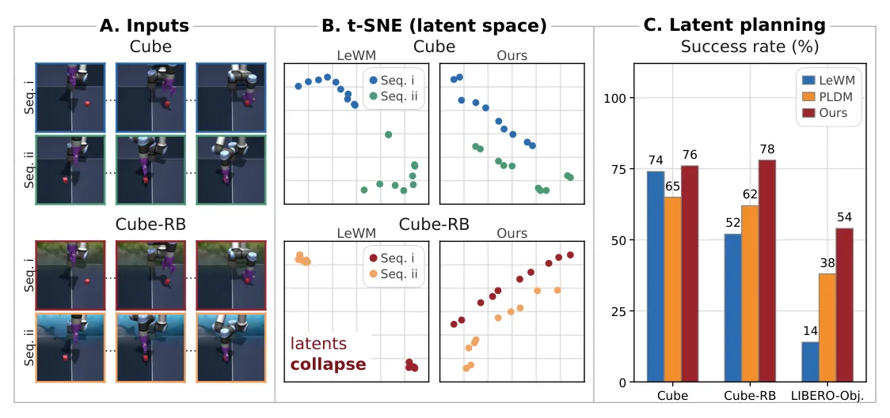
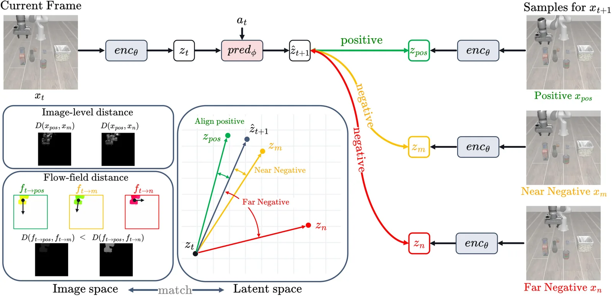
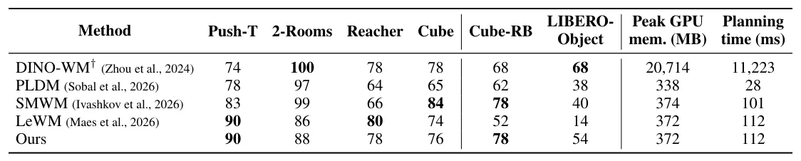

O Problema Oculto nos Modelos de Mundo Latentes
Os modelos de mundo (world models) têm se destacado como uma ferramenta fundamental para robótica e direção autônoma. Ao aprender a dinâmica do ambiente para prever as consequências de ações, eles permitem que agentes planejem comportamentos através de experiências imaginadas. No entanto, aprender representações que capturem informações críticas de estado sem serem sobrecarregadas por detalhes visuais de alta dimensão é um desafio persistente. As Arquiteturas Preditivas de Embedding Conjunto (JEPA, na sigla em inglês) surgem como uma solução promissora ao prever representações alvo a partir do contexto, ignorando completamente a reconstrução em nível de pixels. Isso permite que um codificador mapeie observações para estados latentes enquanto um preditor estima embeddings futuros baseados no histórico de observações e ações.
A Vulnerabilidade do Colapso de Representação
A abolição da reconstrução de pixels introduz uma vulnerabilidade crítica: o colapso de representação. Sem um objetivo bem constrito, o modelo pode mapear trivialmente todas as observações para um embedding constante. Esforços consideráveis foram dedicados a aprender representações que não colapsem em modelos preditivos. Abordagens iniciais focaram em restringir atualizações do codificador, seja através de codificadores alvo de média móvel ou congelando grandes codificadores visuais pré-treinados. Embora estabilizem os alvos de previsão, esses métodos não forçam explicitamente as representações a distinguir entre diferentes resultados de ação.
Identificando o Colapso Estático
Os autores deste paper identificam um modo de falha específico chamado 'colapso estático'. Neste cenário, o codificador preserva conteúdo estático específico de cada episódio (como o fundo da cena) enquanto suprime mudanças relevantes para a manipulação. Como o conteúdo estático é temporalmente previsível, mas diverso entre episódios, essa falha pode persistir mesmo na presença de regularizadores de distribuição, como o SIGReg. Um estudo controlado no benchmark OGBench-Cube demonstrou que a introdução de fundos aleatórios degrada substancialmente o desempenho de planejamento, embora a tarefa de manipulação subjacente permaneça inalterada. Isso revela que o modelo está aprendendo a distinguir episódios pelo fundo, e não pelo estado do objeto sendo manipulado.

A Solução: Regularização Contrastiva Guiada por Movimento
Para resolver o problema do colapso estático, os autores propõem a regularização contrastiva guiada por movimento. A ideia central é comparar as transições latentes previstas com transições para observações candidatas do mesmo episódio. Isso reduz a utilidade da identidade do fundo estático para distinguir os resultados das ações. Em vez de tratar apenas o próximo frame como positivo e todos os outros como negativos, o método utiliza similaridades de fluxo óptico para fornecer alvos contrastivos suaves. Candidatos com movimento similar recebem supervisão similar, permitindo que o modelo foque na dinâmica real da cena.

Como Funciona o Mecanismo
O objetivo de treinamento retém a perda de previsão latente e a regularização SIGReg do modelo base LeWM, adicionando a nova perda contrastiva. A função de perda total é uma combinação linear dessas componentes. Para cada transição de treinamento, o modelo amostra N observações candidatas adicionais do mesmo episódio. O fluxo óptico é computado entre as observações, e as similaridades de fluxo são usadas para ponderar os alvos contrastivos. Isso permite que o modelo aprenda que transições com padrões de movimento semelhantes devem ter embeddings latentes semelhantes, independentemente do fundo estático que as cerca.
Avaliação e Resultados
A avaliação foi realizada em seis configurações de controle visual. O par controlado introduzido no estudo, Cube e Cube-RB (Cube com fundos aleatórios), isola o efeito da variação de fundo específica de episódio. Além disso, o benchmark LIBERO-Object foi usado para avaliar se os benefícios se estendem a cenas com múltiplos objetos sem substituição sintética de fundo. Os resultados mostram que o método melhora o sucesso no planejamento sobre o LeWM de 52% para 78% no OGBench-Cube com fundos aleatórios e de 14% para 54% no LIBERO-Object.

Manutenção de Desempenho em Ambientes Simples
Um aspecto crucial da proposta é que ela não degrada o desempenho em ambientes visualmente mais simples. O método mantém desempenho comparável em quatro outros benchmarks visuais, incluindo Push-T, 2-Rooms e Reacher. Isso indica que a regularização adicional não introduz ruído desnecessário ou instabilidade em tarefas onde o colapso estático não é um problema dominante. A análise de espaço latente mostra que, comparado ao LeWM, as reconstruções a partir dos embeddings congelados do método proposto preservam mais claramente o robô e os objetos manipulados nos conjuntos de dados desafiadores.
Análise de Custo Computacional
Além da precisão, o custo computacional foi medido. O pico de memória GPU e o tempo de planejamento para uma trajetória foram registrados. O método proposto compartilha a mesma arquitetura e configurações de otimização do LeWM, diferindo apenas na adição do objetivo contrastivo. Os resultados mostram que o overhead computacional é mínimo, com tempos de planejamento e uso de memória comparáveis aos baselines mais fortes. Isso sugere que a abordagem é viável para implementação em sistemas de controle em tempo real, onde a eficiência é tão importante quanto a precisão.
Limitações e Trabalho Futuro
Como o LeWM, o método depende de cobertura suficiente de ações e permanece sensível a mudanças nas representações de ação e aparência visual, incluindo alterações no motor de renderização do LIBERO. Além disso, o método assume fundos estáticos; movimento no fundo pode distorcer as similaridades de fluxo óptico usadas para supervisão. Trabalhos futuros devem melhorar a transferência entre ações e aparências, isolar o movimento relevante para a tarefa em cenas dinâmicas e estender o planejamento para horizontes mais longos.
Conclusão
Os autores identificaram o colapso estático em modelos de mundo JEPA, onde as representações preservam conteúdo estático específico de episódio enquanto suprimem mudanças relevantes para a manipulação. Eles introduziram a regularização contrastiva guiada por movimento, que usa fluxo óptico para orientar comparações entre observações do mesmo episódio. Combinada com previsão latente e SIGReg, a abordagem melhora o sucesso no planejamento em cenários com distrações visuais significativas, oferecendo uma solução robusta e eficiente para aprendizado de mundo latente.
O que fica
- O colapso estático ocorre quando o modelo aprende a prever fundos fixos em vez de estados de manipulação, falhando em ambientes com variações de fundo.
- A regularização contrastiva usa fluxo óptico para alinhar transições latentes, distinguindo o que se move do que é estático.
- O método aumenta o sucesso no planejamento de 52% para 78% no OGBench-Cube com fundos aleatórios, mantendo desempenho em benchmarks mais simples.
Paper original: Motion-guided Contrastive Regularization For Latent World Models
Comentários
Nenhum comentário ainda. Seja o primeiro.